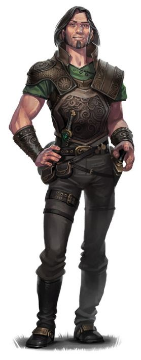

Humain
Dans la plupart des mondes, les humains sont la plus jeune des races communes, la dernière à être apparue et celle dotée de la plus faible longévité par rapport aux nains, aux elfes et aux dragons. Peut-être du fait de leurs vies plus courtes, ils s'efforcent d'atteindre autant d'objectifs qu'ils peuvent pendant les années qui leur sont données. Ou peut-être sentent-ils qu'ils ont quelque chose à prouver aux races plus anciennes, et c'est pourquoi ils construisent de puissants empires basés sur la conquête et le commerce. Mais quelle que soit la raison qui les pousse de l'avant, les humains sont les innovateurs, les bâtisseurs et les pionniers de leurs mondes.
Un large spectre
C'étaient les histoires d'un peuple sans repos qui depuis longtemps avait embarqué sur les mers et les rivières, d'abord pour piller et terroriser, puis pour s'installer. Pourtant, il y avait une énergie, une passion pour l'aventure, qui chantait à chaque page. Loin dans la nuit Liriel lisait, de bougies en précieuses bougies.
Elle n'avait jamais accordé beaucoup d'attention aux humains, mais ces histoires la fascinaient. Dans ces pages jaunies se mélangeaient des histoires de héros audacieux, d'animaux étranges et féroces, de puissants dieux primitifs, et une magie qui faisait partie intégrante de ce pays lointain.
- Elaine Cunningham, Fille du drow
Avec leur penchant pour les migrations et les conquêtes, il y a plus de diversités physiques chez les humains que chez les autres races communes. Il n’y a pas d’humain moyen. Un individu peut mesurer un peu moins de 1,55 mètre à plus de 1,85 mètre, et peser de 55 à 120 kg. La couleur de leur peau varie du presque noir au blanc le plus pâle, et la couleur de leurs cheveux du noir au blond, qu’ils soient bouclés, frisés ou raides, les hommes arborant parfois une pilosité faciale plus ou moins épaisse. De nombreux humains ont une petite quantité de sang non-humain dans leurs veines, révélant des ascendances elfe, orc, ou d’autres lignages. Les humains atteignent l’âge adulte peu avant vingt ans et vivent rarement plus d’un siècle.
Variété en toutes choses
Les humains sont les plus adaptables et les plus ambitieux de toutes les races communes. Leurs goûts, leurs morales et leurs coutumes varient grandement en fonction des nombreux pays où ils se sont installés. Lorsqu’ils s’installent quelque part, ils construisent des cités faites pour durer à travers les âges, et de grands royaumes pouvant perdurer de longs siècles. Même si un humain a une espérance de vie relativement courte, les nations et cultures humaines préservent leurs traditions, dont certaines remontent bien au-delà de la mémoire des humains. Ils vivent pleinement le moment présent – ce qui les rend parfaitement adaptés à la vie d’aventurier – mais font également des plans pour le futur, cherchant toujours à laisser derrière eux un héritage. En tant qu’individu ou groupe, les humains sont opportunistes, font preuve d’adaptabilité et sont toujours prêts à changer de système politique ou social.
Institutions durables
Lorsque chez les elfes et les nains, un individu seul peut prendre la responsabilité de garder un lieu particulier ou un puissant secret, les humains fondent des ordres et des institutions pour de pareilles intentions. Lorsque, dans les clans nains et halfelins, les anciens transmettent les traditions aux jeunes générations, les temples, les gouvernements, les librairies et les codes de lois gravent les traditions humaines dans le marbre de l’histoire. Les humains rêvent d’immortalité, mais (à l’exception des rares qui recherchent la non-vie ou l’ascension divine pour échapper aux griffes de la mort) ils cherchent à y parvenir en veillant à ce que l’on se souvienne d’eux une fois partis.
Bien que certains humains soient xénophobes et vivent dans des sociétés refermées sur elles-mêmes, les terres humaines accueillent de nombreux non-humains en comparaison du nombre d’humains vivant sur les terres des autres races.
Exemplaires dans l’ambition
Les humains qui recherchent l’aventure sont les individus les plus audacieux et ambitieux de cette race audacieuse et ambitieuse. Ils cherchent dans le regard de leurs contemporains le reflet de leur gloire, en amassant pouvoir, fortune et célébrité. Plus encore que chez les autres peuples, les humains défendent des causes plutôt que des territoires ou des groupes.
Noms humains et ethnies
Avec autant de diversités par rapport aux autres cultures, les humains, en tant que race, n’ont pas de noms typiques. Certains parents humains donnent à leurs enfants des noms issus d’autres langues, tels que des noms nains ou elfes (prononcés plus ou moins correctement), mais la plupart nomment leurs enfants en fonction de leurs cultures régionales ou des traditions de leurs ancêtres.
La culture matérielle et les caractéristiques physiques des humains peuvent changer radicalement d’une région à une autre. Dans les Royaumes Oubliés par exemple, l’habillement, l’architecture, la cuisine, la musique et la littérature diffèrent selon que l’on se trouve dans les Marches d’Argent au nord-ouest du continent, ou dans les lointains royaumes du Turmish ou de l’Impiltur plus à l’est. Et ces différences s’accentuent encore plus vers le lointain Kara-Tur. Leurs traits physiques varient cependant plutôt en fonction des flux migratoires des premiers humains, ce qui fait que l'on trouve dans les Marches d’Argent toutes les variations de colorations et de caractéristiques physiques du genre humain.
Dans les Royaumes Oubliés, neuf groupes ethniques humains sont recensés, bien que plus d’une douzaine d’autres ethnies puissent aussi être trouvées dans certaines régions spécifiques de Faerûn. Ces groupes, et les noms typiques de leurs membres, peuvent être utilisés pour un humain comme source d’inspiration, quel que soit votre univers.
Calishite
Plus petits et fins que la majorité des autres humains, les Calishites ont la peau les yeux et les cheveux brun-sombre. On les trouve principalement au sud-ouest de Faerûn.
Prénoms calishites masculins : Aseir, Bardeid, Haseid, Khemed, Mehmem, Sudeiman, Zasheir.
Prénoms calishites féminins : Atala, Ceidil, Hama, Jasmal, Meilil, Seipora, Yasheira, Zasheida.
Noms de famille : Basha, Dumein, Jassan, Khalid, Mostana, Pashar, Rein.
Chondathien
Les Chondathiens sont minces, mates de peau, avec des cheveux bruns allant du presque blond au presque noir. La plupart sont grands et ont les yeux vert ou noisette, mais ces traits ne sont pas universels. Les descendants de ce peuple sont prédominants dans les territoires centraux de Faerûn, et sur le pourtour de la Mer Intérieure.
Prénoms chondathiens masculins : Darvin, Dorn, Evendur, Gorstag, Grim, Helm, Malark, Morn, Randal, Stedd.
Prénoms chondathiens féminins : Arveene, Esvele, Jhessail, Kerri, Lureene, Miri, Rowan, Shandri, Tessele.
Noms de famille : Amblecrown, Buckman, Dundragon, Evenwood, Greycastle, Tallstag.
Damarien
Établis à l’origine dans le nord-ouest de Faerûn, les Damariens sont d’une taille et d’une carrure moyennes, avec un teint allant du mate au plus clair. Leurs cheveux sont généralement bruns ou noirs et la couleur de leurs yeux varie énormément d’un individu à l’autre, bien que la couleur noisette soit la plus commune.
Prénoms damariens masculins : Bor, Fodel, Glar, Grigor, Igan, Ivor, Kosef, Mival, Orel, Pavel, Sergor.
Prénoms damariens féminins : Alethra, Kara, Katernin, Mara, Natali, Olma, Tana, Zora.
Noms de famille : Bersk, Chernin, Dotsk, Kulenov, Marsk, Nemetsk, Shemov, Starag.
Illuskien
Les Illuskiens sont grands, avec le teint clair et les yeux bleus ou gris-acier. La majorité d’entre eux ont les cheveux noir-corbeaux, mais ceux qui habitent dans l’extrême nord-ouest de Faerûn ont les cheveux blonds, roux ou châtains-clair.
Prénoms illuskiens masculins : Ander, Blath, Bran, frath, Geth, Lander, Luth, Malcer, Stor, Taman, Urth.
Prénoms illuskiens féminins : Amafrey, Betha, Cefrey, Kethra, Mara, Olga, Silifrey, Westra.
Noms de famille : Brightwood, Helder, Hornraven, Lackman, Stormwind, Windrivver.
Mulien
LE DEUXIÈME MEILLEUR AMI DE TOUT LE MONDE
Tout aussi facilement qu’ils se mélangent entre ethnies, les humains se mélangent sans problème aux autres races. Ils s’entendent avec presque tout le monde, même s’ils ne sont pas pour autant proches de beaucoup d’entre eux. Les humains font de bons ambassadeurs, diplomates, magistrats, marchands et fonctionnaires de toutes sortes.
Nains. « C’est un peuple robuste, fidèle en amitié, et qui n’a qu’une parole. Mais leur avidité pour l’or sera leur chute, pour sûr ».
Elfes. « Il est préférable de ne pas aller se promener dans les bois elfes. Ils n'aiment pas les intrus, et vous avez de grandes chances d'être ensorcelé ou truffé de flèches. Pourtant, si un elfe parvient à passer au-delà de sa damnée fierté raciale et vraiment vous traiter comme un égal, vous pouvez apprendre beaucoup d'eux ».
Halfelins. « Il est difficile de résister à un repas dans une maison de halfelin, si vous ne vous fracassez pas la tête au plafond avant. La nourriture est bonne et les histoires devant un beau feu de cheminée sont palpitantes. Si les halfelins avaient une once d'ambition, ils pourraient vraiment parvenir à quelque chose ».
Prévalant sur les côtes est et sud-est de la Mer Intérieure, les Muliens sont généralement grands, minces, avec le teint olivâtre et des yeux noisettes ou bruns. Leurs cheveux vont du noir au châtain foncé, mais sur les terres où ils sont prédominants, beaucoup, ainsi que la totalité des nobles, se rasent intégralement le crâne.
Prénoms muliens masculins : Aoth, Bareris, Ehput-Ki, Kethot, Mumed, Ramas, So-Kehur, Thazar-De, Urhur.
Prénoms muliens féminins : Arizima, Chathi, Nephis, Nulara, Murithi, Sefris, Thola, Umara, Zolis.
Noms de famille : Ankhalab, Anskuld, Fezim, Hahpet, Nathandem, Sepret, Uuthrakt.
Rashémi
Principalement installés à l’est de la Mer Intérieure, et souvent mélangés aux Muliens, les Rashémis sont généralement petits, robustes et musclés. Ils ont habituellement la peau sombre, les yeux noirs et d’épais cheveux noirs.
Prénoms rashémis masculins : Borivik, Faurgar, Jandar, Kanithar, Madislak, Ralmevik, Shaumar, Vladislak.
Prénoms rashémis féminins : Fyevarra, Hulmarra, Immith, Imzel, Navarra, Shevarra, Tammith, Yuldra.
Noms de famille : Chergoba, Dyernina, Iltazyara, Murnyethara, Stayanoga, Ulmokina.
Shou
Les Shous forment l’ethnie la plus nombreuse et la plus puissante du continent de Kara-Tur, situé loin à l’est de Faerûn. Ils ont une couleur de peau qui tire sur le jaune et le bronze, avec des cheveux noirs et des yeux noirs. Les noms de famille shous sont normalement placés avant les prénoms.
Prénoms shous masculins : An, Chen, Chi, Fai, Jiang, Jun, Lian, Long, Meng, On, Shan, Shui, Wen.
Prénoms shous féminins : Bai, Chao, Jia, Lei, Mei, Qiao, Shui, Tai.
Noms de famille : Chien, Huang, Kao, Kung, Lao, Ling, Mei, Pin, Shin, Sum, Tan, Wan.
Téthyrien
Répandus le long de la Côte des Épées, à l’ouest de Faerûn, les Téthyriens sont d’une taille et d’une stature moyenne, avec une peau sombre qui tend à devenir plus claire chez ceux qui vivent le plus au nord. La couleur de leurs cheveux et de leurs yeux varie grandement, mais les cheveux châtains et les yeux bleus sont les plus courants. Les Téthyriens utilisent essentiellement des noms d’origine chondathiens.
Turami
Natifs de la côte sud de la Mer Intérieure, les Turamis sont généralement grands et musclés, avec une peau de couleur acajou, des cheveux noirs et frisés, et des yeux noirs.
Prénoms turamis masculins : Anton, Diero, Marcon, Pieron, Rimardo, Romero, Salazar, Umbero.
Prénoms turamis féminins : Belama, Dona, Faila, Jalana, Luisa, Marta, Quara, Selise, Vonda.
Noms de famille : Agosto, Astorio, Calabra, Domine, Falone, Marivaldi, Pisacar, Ramondo.
Traits
Il est difficile de faire des généralisations en ce qui concerne les humains, mais ils partagent les traits suivants :
VARIANTE
Si votre MD utilise la règle optionnelle des dons, il peut vous autoriser à utiliser cette variante des traits pour les humains, qui remplace le +1 à toutes les caractéristiques.
Augmentation de caractéristiques. Deux caractéristiques différentes de votre choix augmentent de 1.
Compétence. Vous gagnez la maîtrise d'une compétence de votre choix.
Don. Vous obtenez un don de votre choix.
Augmentation de caractéristiques. Toutes vos caractéristiques augmentent de 1.
Âge. Les humains atteignent l'âge adulte peu avant 20 ans et vivent moins d'un siècle.
Taille. Les humains ont des tailles et des complexions très variables, pouvant mesurer depuis 1,55 mètre jusqu'à bien plus de 1,85 mètre. Quelle que soit votre taille à l'intérieur de cette plage, votre taille est Moyenne (M).
Vitesse. Votre vitesse de base est de 9 mètres.
Langues. Vous pouvez parler, lire et écrire le commun et une langue supplémentaire de votre choix. Les humains apprennent généralement les langues des peuples avec lesquels ils traitent, y compris les dialectes obscurs. Ils sont friands de saupoudrer leur discours avec des mots empruntés à d'autres langues comme les malédictions orcs, les expressions musicales elfiques, les expressions militaires naines, et ainsi de suite.
Traduit par dude et blueace